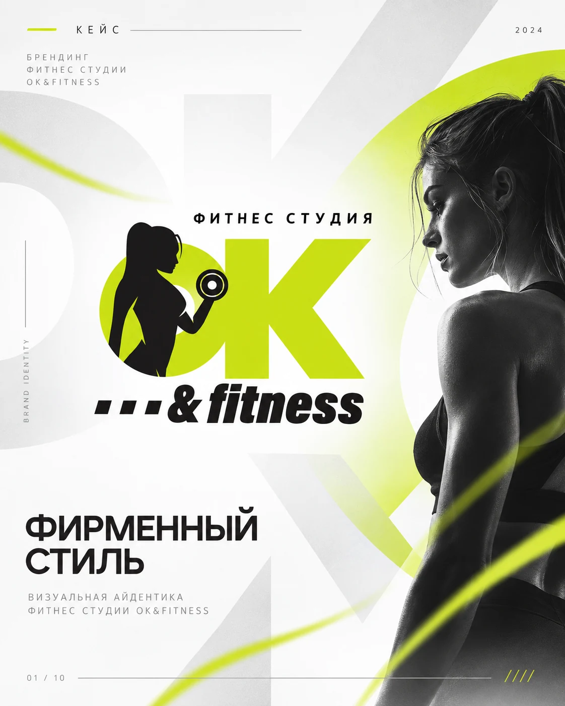
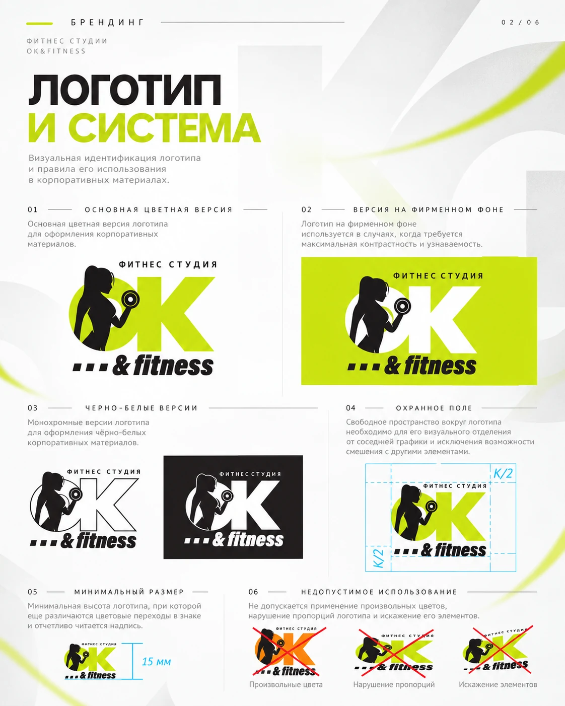
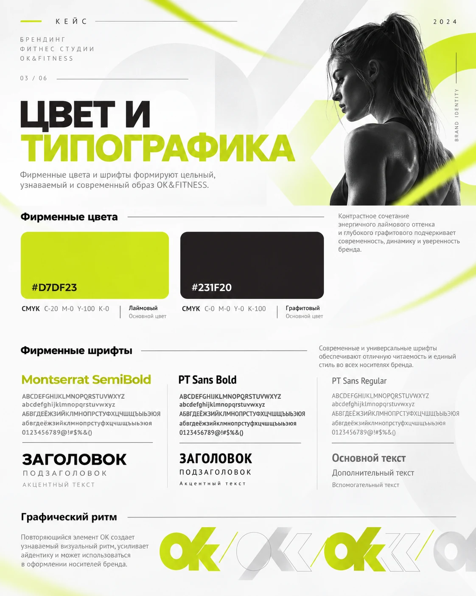
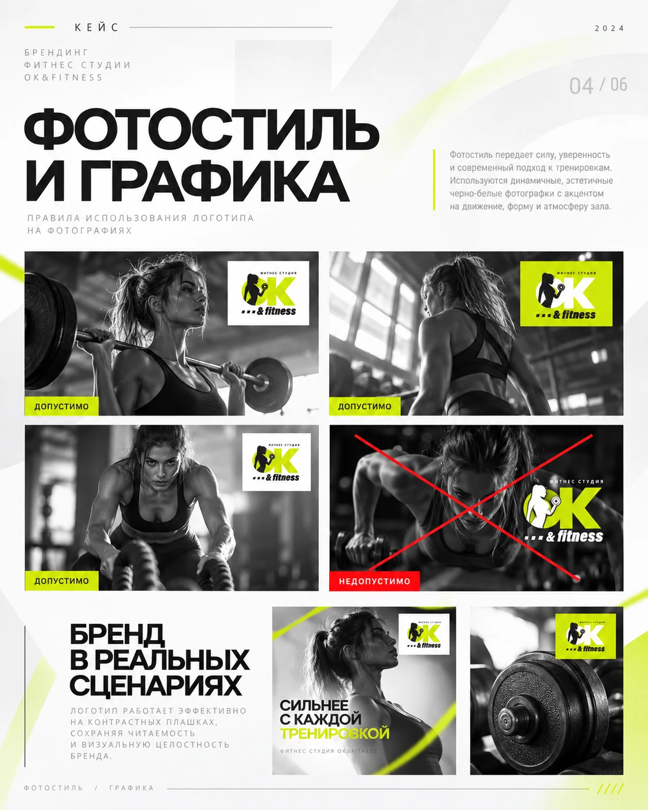
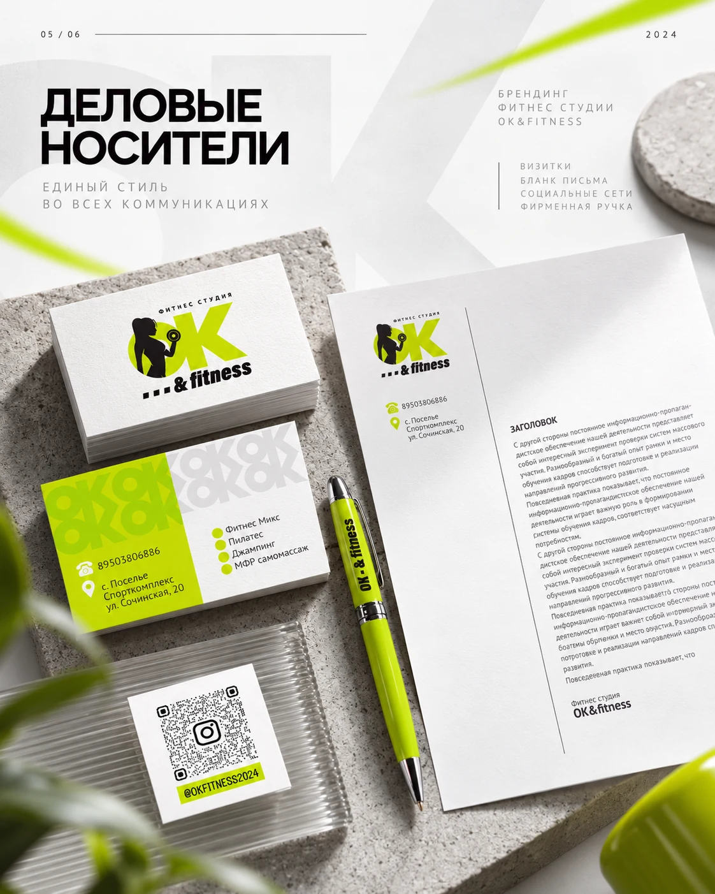
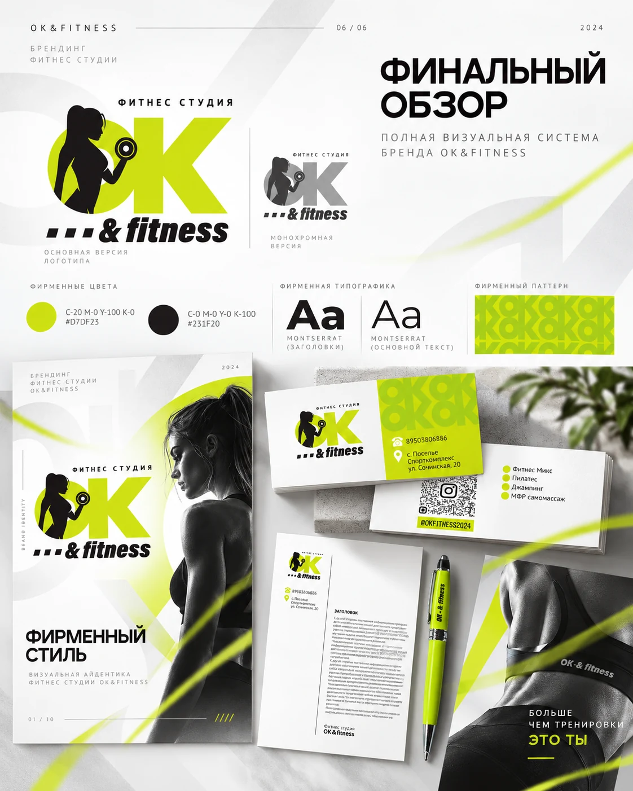

ЛОГОТИПЫ / ФИРМЕННЫЙ СТИЛЬ
OK Fitness
Логотип и фирменный стиль фитнес-студии: цвет, типографика, фотостиль, графика и деловые носители.






ЛОГОТИПЫ / ФИРМЕННЫЙ СТИЛЬ
Логотип и фирменный стиль фитнес-студии: цвет, типографика, фотостиль, графика и деловые носители.





